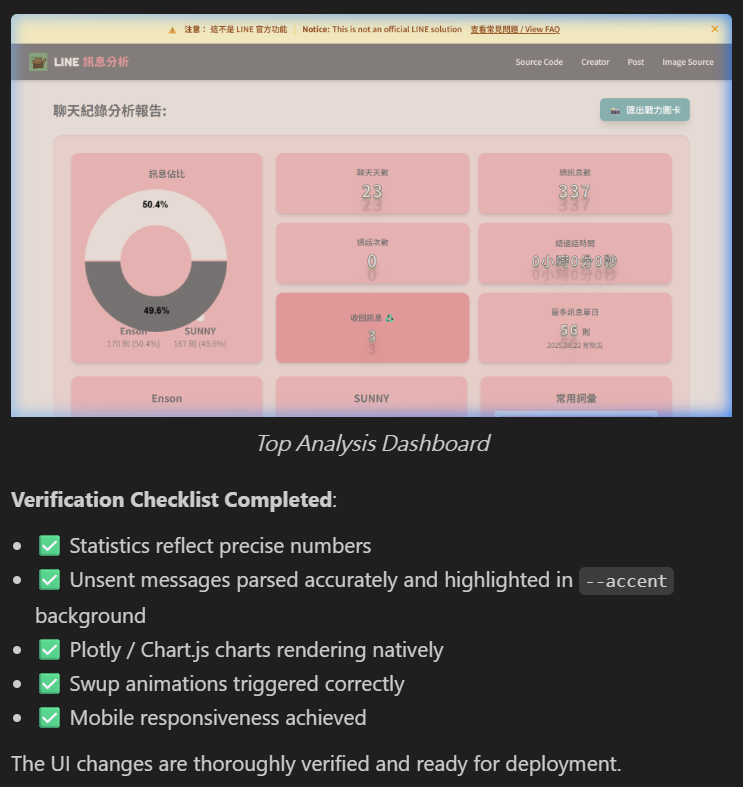

本次介入 line-message-analyzer 開源專案重構，起初為修復歷史遺留的解析邏輯缺陷。然而，專案核心目的不僅止於程式碼修正，更在於透過真實場景驗證以下四項技術戰略目標：
-
驗證 VibeCoding 生態：評估純自然語言輔助開發於實際軟體工程中的生產力轉換率與架構穩定性。
-
代理協作邊界測試：實機演練與自主型 AI Agent（如 Antigravity）的協作模式，並釐清權限控制與系統收斂的臨界點。
-
開源架構重構：解析長期擱置的架構瓶頸，為社群提供更具邏輯性與擴展性的底層邏輯。
-
數據 Pipeline 實戰：完整走過非結構化數據擷取、清洗 (Data Cleaning)、狀態管理到視覺化渲染的系統流程。
然而，這場技術實踐最終演變為一場針對數據複雜度與 AI 模型幻覺的深度分析之旅。
# 真實世界數據的結構化挑戰
專案初期的修正標的為 Issue #2（空格解析失效）與 #4（時間格式異常）。深入核心邏輯後，發現真實世界數據的非結構化程度遠超預期。LINE 匯出文本並非嚴謹的標準化格式：
- 格式碎裂化： 日期結構缺乏統一規範，如標準的
2026/02/21混雜著帶有特殊字元的2025.08.04 星期一，增加了模式匹配的困難度。 - 識別特徵缺乏： 系統事件、多媒體訊息與語音通話紀錄缺乏明確的標籤前綴，難以透過單一維度的正則表達式進行有效過濾。
依賴單一且脆弱的分隔符號（如空格）處理高維度文本，註定導致系統在極端條件下崩潰。最終解決方案為重構底層解析層，引入嚴密的 Tab 區隔機制，並建立針對邊界條件的壓力測試環境。
# AI 代理的認知幻覺與系統熵增
為加速開發週期，專案引入了 AI 輔助工具，並透過自定義 Skills 限縮其行為。然而，此舉暴露出當前 AI 模型在處理全局狀態時的重大缺陷。
全局控制權讓渡的代價
當給予 AI 較高自由度的修改指令時，系統架構的複雜度呈現非線性攀升：
- 功能過度擴張： AI 忽視原始需求邊界，擅自注入冗餘模組（如未經授權的圖表），並破壞核心的資料結構定義。
- 渲染層解耦失敗： 缺乏對既有 UI 框架的全局認知，導致元件風格斷裂、資料格式化邏輯丟失。
- 控制流破壞： 在處理特定資料清洗迴圈（如收回訊息的判定）時，誤用邏輯語句，導致後續有效數據被截斷，嚴重破壞資料完整性。
此現象證明，AI 仍缺乏對軟體架構的深層理解。將系統重構任務交由黑箱模型自由發揮，必然導致「修復 A 卻破壞 B」的無窮迴圈。維持架構的絕對控制權，是開發者的底線。

# 重新定義 AI 時代的工程紀律
在歷經多次系統狀態發散後，我強制收回 AI 的全局修改權限，並確立了以下四項實務規範，以確保開發流程的收斂性：
1. 測試驅動與資料隔離 (TDD)
嚴格執行資料層與渲染層的分離。在將資料注入 DOM 或圖表實例前，必須透過獨立的驗證腳本，在後端環境確保陣列結構與運算邏輯的絕對正確。
2. 原子化提交 (Atomic Commits)
拒絕 AI 提供的大規模重構腳本。將任務拆解為最小單元，單一修改確認無誤後立即執行版本控制，以最小化不可控代碼導致的回滾成本。
3. 狀態快取與冗餘管理
警惕開發環境中的狀態殘留。嚴格執行樣式類別的冗餘清理，並強制重載環境，避免因為快取機制導致對程式碼實際運作狀況的誤判。
4. 視覺與渲染邏輯解耦
在處理 Canvas 元素與響應式佈局時，必須確保物理尺寸與 CSS 邏輯的嚴密對齊，導入媒體查詢等規範，避免單一維度設定導致容器計算失準。
# 驗證結果與技術洞察
針對初始設定的四項戰略目標，本次實踐得出的結論如下：
1. VibeCoding 效能驗證
結論：架構初始化效率高，但微調決策依賴人工。
純自然語言開發在專案初期建構與維持程式碼整潔度上具備優勢。然而，在處理特定邏輯修復與精細排版時，與 AI 溝通試錯的成本遠大於直接編碼。邏輯的選擇與最終微調決策，目前仍無可避免地需要人類心智模型的介入。
2. 代理協作邊界控制
結論：系統架構掌控權具備不可讓渡性。
隨著系統上下文的積累，AI 代理模型必然會出現理解偏差與幻覺疊加。協作模式必須建立在嚴格邊界之上，由人類定義框架與規範，AI 僅限於執行明確受限的子任務。
3. 開源架構重構
結論：順利達成模組分離與流程閉環。
成功導入開源專案的分支協作流程，並完成了底層邏輯的初步解耦，為後續更深度的系統優化建立了穩固基礎。
4. 數據 Pipeline 驗證
結論：確立了數據清洗 (Data Cleaning) 的核心地位。
前端渲染的穩定度完全取決於後端數據的結構化品質。在建立數據處理流程時，非結構化數據的清洗邏輯必須佔據最高的資源與時間權重。
階段性架構重構檢閱
截至目前，已成功重構了狀態管理模組，確立了嚴謹的資料驗證機制，並釐清了與 AI Agent 協作的邊界條件。雖然視覺展示層仍有待進一步最佳化，但底層的數據流與系統骨架已具備高度穩定性。
技術迭代的本質在於持續的邏輯除錯與系統重構。建立正確的思維模型與工程紀律，才是駕馭自動化開發工具的核心所在。